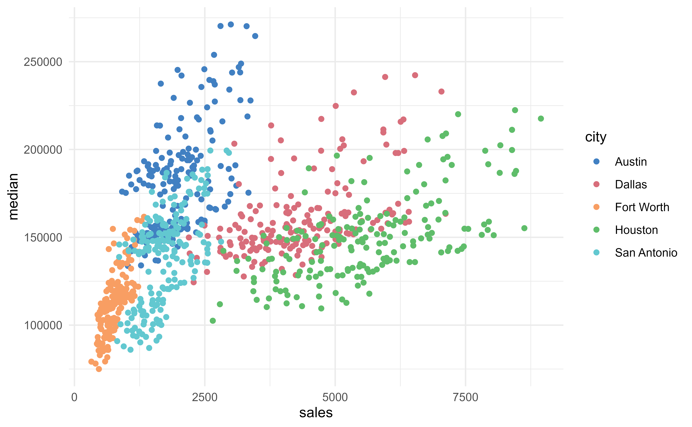
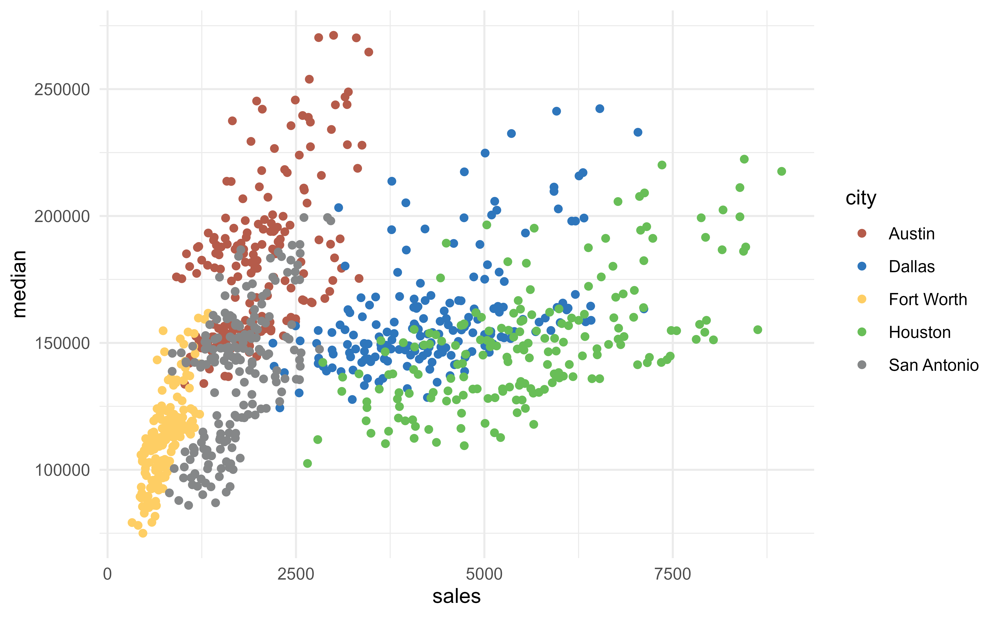

Scales to be used with the ggplot2 package. Discrete palettes are
named scale_*_bde_d, while continuous palettes are named scale_*_bde_c.
Usage
scale_color_bde_d(
palette = c("bde_vivid_pal", "bde_rose_pal", "bde_qual_pal"),
alpha = NULL,
rev = FALSE,
...
)
scale_fill_bde_d(
palette = c("bde_vivid_pal", "bde_rose_pal", "bde_qual_pal"),
alpha = NULL,
rev = FALSE,
...
)
scale_color_bde_c(
palette = c("bde_rose_pal", "bde_vivid_pal", "bde_qual_pal"),
alpha = NULL,
rev = FALSE,
guide = "colorbar",
...
)
scale_fill_bde_c(
palette = c("bde_rose_pal", "bde_vivid_pal", "bde_qual_pal"),
alpha = NULL,
rev = FALSE,
guide = "colorbar",
...
)Arguments
- palette
Name of the BdE palette to apply. See
bde_tidy_palettes()for details.- alpha
An alpha-transparency level in the range
[0,1](0means transparent and1means opaque). A missing, i.e.,alpha = NULL, does not add opacity codes ("FF") to the individual color hex codes. Seeggplot2::alpha().- rev
Logical indicating whether the ordering of the colors should be reversed.
- ...
Further arguments of
ggplot2::discrete_scale()orggplot2::continuous_scale().- guide
A function used to create a guide or its name. See
guides()for more information.
Value
A ggplot2 color scale.
Examples
library(ggplot2)
set.seed(596)
txsamp <- subset(
txhousing,
city %in% c(
"Houston", "Fort Worth",
"San Antonio", "Dallas", "Austin"
)
)
ggplot(txsamp, aes(x = sales, y = median)) +
geom_point(aes(colour = city)) +
scale_color_bde_d() +
theme_minimal()

ggplot(txsamp, aes(x = sales, y = median)) +
geom_point(aes(colour = city)) +
scale_color_bde_d("bde_qual_pal") +
theme_minimal()
